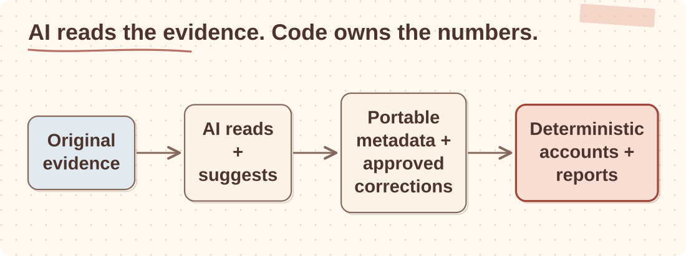

Architecture case study
Folder-First Company Accounts
I built a private, folder-first system for company and personal financial records. The records stay understandable and useful without this application, a database or a particular AI provider.
Python / original PDF, CSV and XLSX evidence / portable JSON and Markdown / deterministic accounting rules / AI-assisted document reading / reproducible reports / Proxmox LXC
Overview
This started as a way to reconcile statements and invoices without handing accounting decisions to a model. It has grown into an internal company-management workspace covering multiple legal entities and their owners.
I eventually realised the organised folder was the product. Original documents remain the evidence; Markdown and versioned JSON preserve context and extracted records; deterministic Python handles statement parsing, FX conversion, categorisation, reconciliation, P&L and supported tax estimates. Dashboards and reporting packages are useful views, but I should be able to throw them away and rebuild them.
The boundary around AI is deliberate. I use it to read untidy documents, extract metadata, suggest matches and help review exceptions. I do not let it own accounting state or quietly turn a suggestion into a financial fact. The personal assistant receives only a privacy-safe, read-only summary.
Requirements
Architecture
I keep the evidence authoritative and make everything else rebuildable.

I start with the legal entity, not the document type. Each company owns its records, each period has separate evidence and generated output, and personal tax never enters company calculations. If I add a combined management view, it must read separate summaries without blurring entity, currency, period or source.
Key components
| Component | Responsibility | Design choice |
|---|---|---|
fx.py | Converts non-GBP transactions to GBP. | No external FX API; rates come from the statements' own conversion rows. |
categorize.py + rules.py | Categorises every transaction. | First matching rule wins; refund pairing nets same-merchant debit/credit pairs so they drop off the P&L but stay visible to the accountant, flagged with the paired transaction id. |
match suggestions | Suggests transaction ↔ invoice matches. | Batched and cached per transaction. |
tax.py | P&L and finance/tax estimates. | Applicable tax rules come from period-specific profiles; outputs remain explicitly labelled as estimates and personal records stay outside company calculations. |
corrections.py | Sanctioned manual fixes for misfiled, mismatched or double-counted invoices. | Only file moves and cache changes: no AI calls and no accounting maths. |
| Document index | Records content identity, source path, file metadata, entity or person ownership and accounting period. | The JSON index is rebuilt from canonical originals and supports deterministic path-based discovery; richer extracted metadata remains a separate evolving layer. |
| Lossless intake | Inspects every dropped file, hashes its bytes and routes it to canonical storage, review or failure. | Duplicate, unsupported and ambiguous files are preserved in explicit states with manifests and move journals. |
| Entity profiles | Define period boundaries, reporting currency, statement formats and enabled calculations. | Unsupported jurisdictional calculations fail closed until the policy is validated. |
Implementation detail
The implementation choice I care about most is lossless intake. Every file gets a SHA-256 identity and inspection record before it moves. I check canonical originals for byte-identical duplicates, validate archives against path traversal, and send uncertainty to a named review state rather than guessing a destination.
manifest = {
document_id: `sha256:${digest}`,
original_name,
inspection,
extraction,
status,
history
}
journal("planned", source, destination, digest)
atomic_move(source, destination)
journal("complete", source, destination, digest)Portable JSON writes go through a same-directory temporary file, fsync and atomic replacement. Rollback re-hashes the filed document before moving it. I would rather stop with a visible inconsistency than restore different bytes under an old identity.
Decisions that mattered
- AI reads; code counts. AI extracts fields, suggests matches and reviews exceptions. Totals, categories and tax estimates come from deterministic Python.
- Currency rates come from the statements themselves. Monthly rates are taken from the statements’ own conversion rows. A missing month falls back to the previous rate, then to an explicit configured value, never a silent guess.
- Small, cached AI calls. The matcher only asks about transactions it has not seen, caps each prompt at 25 charges and keeps finished chunks. A timeout costs one chunk, not the run.
- Mistakes are fixed by script, not by hand. Corrections are scripted file moves and cache-key migrations. Duplicate and bundled charges are found by exact arithmetic.
- Unsupported rules fail closed. Each company has a profile that controls periods, statement formats and calculations. Filing can work while unsupported bookkeeping or tax logic refuses to run.
- Luke gets a summary, not the statements. The family assistant answers finance questions from one read-only aggregate file, without access to statements or invoices.
- Shared evidence is verified byte for byte. Intercompany documents are copied to each company that needs them and checked by hash. Conflicts are never overwritten.
Trade-offs
| Decision | Why | Cost |
|---|---|---|
| Local files over SaaS accounting integrations | Lower privacy risk and easier iteration for a private workflow. | More local operations and less automatic bank reconciliation. |
| Files and JSON over a canonical database | I can inspect the records with ordinary tools and replace the application around them. | Concurrent writes and large-scale querying would need a rebuildable database projection later. |
| Explicit review states for uncertainty | Prevents AI suggestions from becoming financial truth. | Ambiguous evidence remains visible and requires resolution. |
| Private source repository, separate private data | Code can be maintained without mixing financial evidence into Git. | Storage backup and restoration need their own verified process. |
Lessons learned
- I trust small, inspectable scripts more than a general agent with broad permissions.
- The durable product is the organised evidence and its contracts. The dashboard is useful, but it is still only a view.